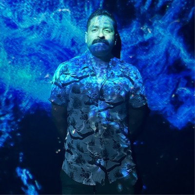

Research direction
Teaching AI to follow a lead
What makes a search agent change direction, pursue a clue, or recognize that it hasn’t found enough?
Software engineer in Denver, Colorado
I follow the trails hidden in data.
A place for my projects, thoughts, and things I’m learning.
Read my notesWriting & notes
AI search, data context, and
the work of finding out.
What makes a search agent change direction, pursue a clue, or recognize that it hasn’t found enough?
How lineage, definitions, and context help an agent understand what it found.
Research directionWhat does it take to make an AI’s discoveries verifiable?
Research directionScanned records, unfamiliar spellings, and information hidden in plain sight.
Research directionThese are working research briefs. I’ll publish experiments and findings here as I explore them.
Selected work
A few things I’ve helped build
in production.
A feature-to-model lineage system that automatically catalogs thousands of ML features and models, making dependencies visible.
12 missing feature families identified during migration.
Identified gaps during a critical migration and helped prevent stale feature usage affecting search model accuracy. The work connects data discovery to the reliability of the models that depend on it.
Reworked profiling and anomaly detection for 37 production search features, shortening the path from data to useful signals.
27× faster profiling runtime.
The platform monitors search feature health. This work brought profiling and anomaly detection into a much shorter feedback loop, helping teams understand the data their search models rely on.
A self-service deployment portal built with React, TypeScript, Python, and FastAPI, with OAuth authentication.
200+ engineers enabled to deploy ML models independently.
The platform increased deployment velocity by 30% and adoption by 25%. It brought the interface and the underlying infrastructure together so engineers could work more independently.

Denver, ColoradoA little background
I’m a software engineer at Etsy, building around data discovery and AI. Previously, I worked on ML platforms and data tooling at Intuit Mailchimp.
I like getting to the bottom of things. At work, that might mean tracing a model back to its data. Outside work, it might mean finding a passenger card or a court record that tells me something new about my grandfather.
This is a place for both: things I build, questions I follow, and what I learn along the way.
A little weather for this corner of the internet.
Seasons follow the Northern Hemisphere calendar. Reduced-motion settings are always respected.